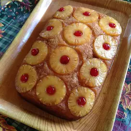

Pineapple Upside Down Cake

Description
A rich and deliciously sweet recipe that will be sure to please all the pineapple lovers in your life.
Ingredients
- Pineapple Cake Mix
- 2 Eggs
- 3 Tablespoons of butter
- Can of sliced pineapples
- Jar (6 oz) of maraschino cherries without stem, drained
- 1/4 cup of Vegetable oil
- 1 cup packed brown sugar
- 3.4 oz pack of French Vanilla pudding mix
Steps
- Heat oven to 350 degrees. In a 13x9-inch pan, melt butter in oven.
Sprinkle brown sugar evenly over butter.
Open can of pineapple slices and drain juice into separate cup for a later step. Arrange pineapple slices on brown sugar.
Place cherry in center of each pineapple slice, and arrange remaining cherries around slices; press gently into brown sugar.
- Using the reserved pineapple juice, add just enough water to make 1 cup.
Put the cake mix into a bowl, adding the pudding mix, eggs, oil, and pineapple juice.
Blend with hand mixer and pour finished batter over pineapples and cherries.
- Bake 42 to 48 minutes or until toothpick inserted in center comes out clean.
Immediately run a butter knife around side of pan to loosen cake.
Place heatproof serving plate upside down onto pan; turn plate and pan over.
Leave pan over the cake for 5 minutes so brown sugar can drizzle over the cake; remove pan.
Cool 30 minutes. Serve warm or cool. Store covered in refrigerator.